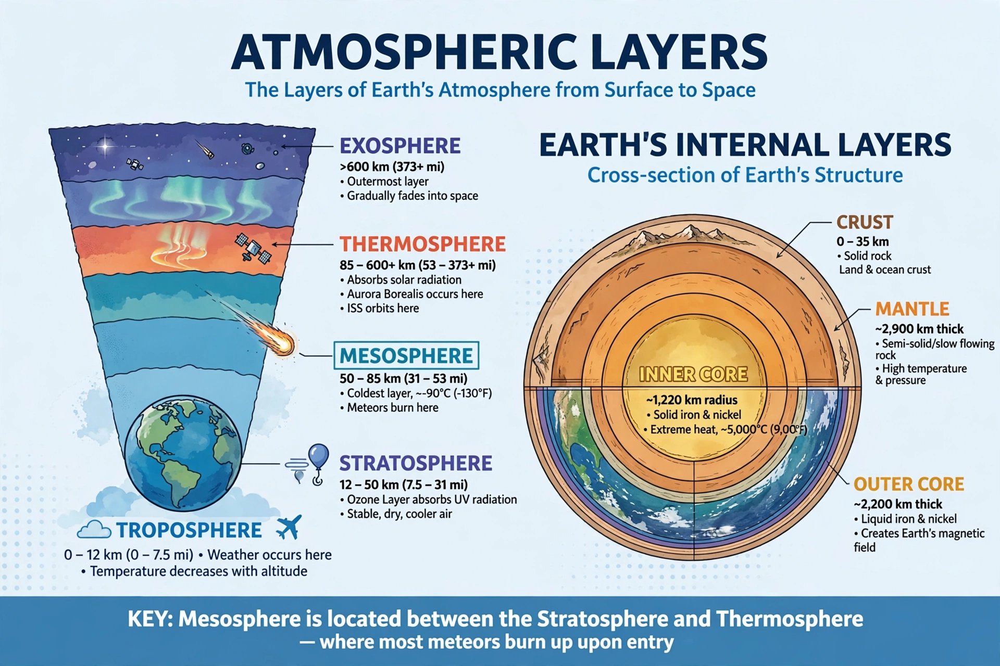

The mesosphere is the third layer of Earth's atmosphere, directly above the stratosphere and below the thermosphere, extending from about 50 to 85 km above sea level.

| Mesosphere | |
|---|---|
| Altitude | 50–85 km |
| Temperature | Down to −90 °C at mesopause |
Temperature decreases with height, making the mesopause the coldest place in the Earth system. Most meteors burn up in this layer. Noctilucent clouds form near the mesopause in summer polar regions.
Gravity waves from below drive circulation, causing the summer mesopause to be far colder than winter. The mesosphere is too high for aircraft and weather balloons, too low for satellites, so it is studied by sounding rockets.